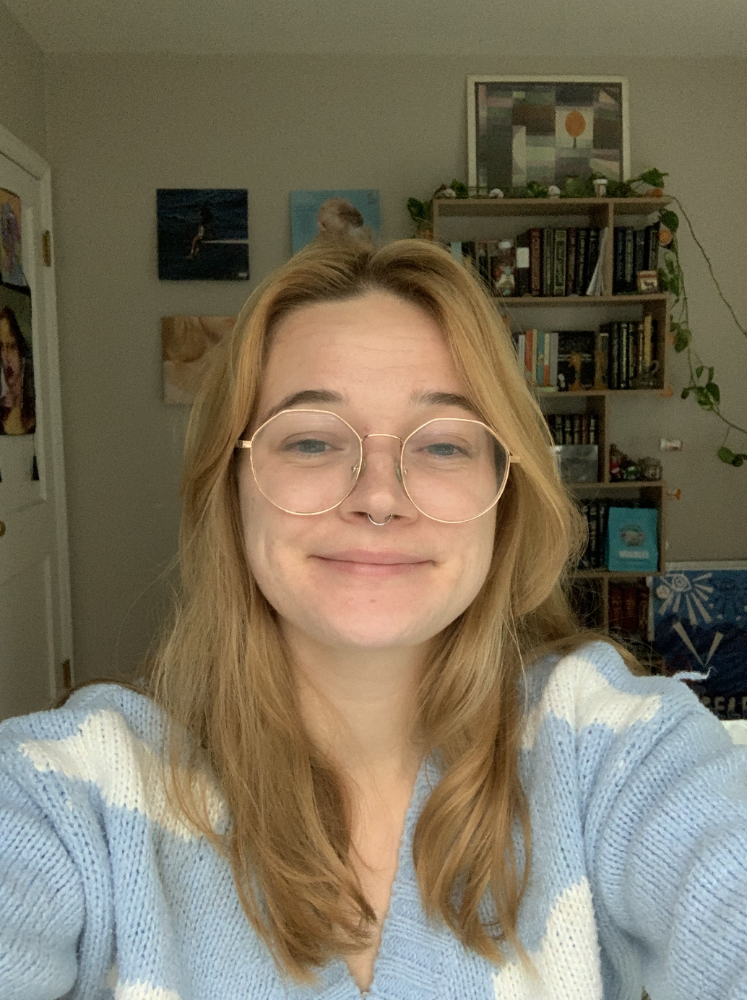

Hello, my name is Maggie Swomley and I live in Thomaston, Connecticut. I am currently a student at MIT's Coding Bootcamp. I have a BA in Biology from Occidental College in Los Angeles, California. I am passionate about all things STEM. A fun fact about me is that I love animals. I have three pets; a dog, Mollie, and two cats, Kaisa and Nyktos.
Contact Me:
maggieswomley18@gmail.com
LinkedIn
GitHub
